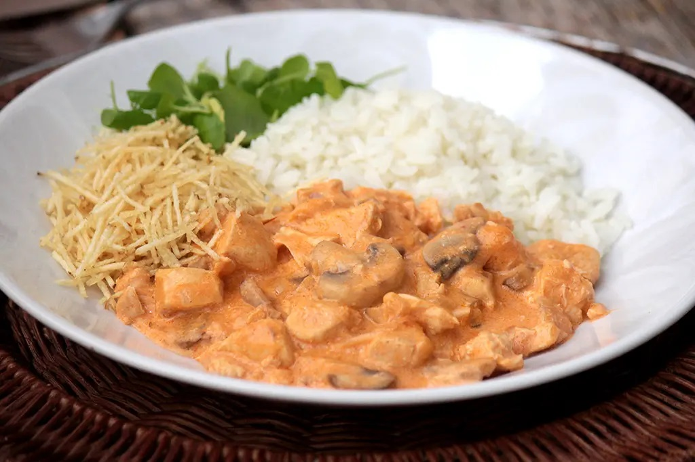

Pratos com frango, peru, chester e outras aves são muito bem-vindos no dia a dia, mas também podem ser preparados para fazer bonito em um jantar especial ou em uma festa. Consulte a seleção de receitas e aprenda como fazer desde torta de frango e frango assado até o peru e o chester de Natal.
Strogonoff de Frango
Frango Xadrez